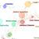

|
Cyberinfrastructure Shell (
CIShell)
CIShell supports the plug-and-play of datasets and algorithms and their bundling into custom tools that serve the
specific needs of a user group or research community. It has been applied to develop diverse custom tools, see below.
Feel free to take plugins from any of these tools to design your personal dream tool. |
|
|
Provided by the
Cyberinfrastructure for Network Science Center at Indiana University.
|
|
|
Learn more about existing CIShell-powered tools below.
|
|
|
Network Workbench Tool (
NWB)
The NWB Tool supports researchers, educators, and practitioners interested in the study of biomedical, social and
behavioral science, physics, and other networks. It comes with a 77-page
user manual
.
Gallery
|
|
|
Science of Science Tool (
Sci
2
)
The
Sci
2
Tool was specifically developed for science policy makers and researchers that study science by scientific means. It
supports the temporal, geospatial, topical, and network analysis and visualization of scholarly datasets at the micro
(individual), meso (local), and macro (global) levels. There exists a
112-page user manual, a continuously updated
Sci
2 Tool wiki, and 24 hours of
NIH tutorials in this tool.
Gallery

|
|
|
Epidemics Tool (EpiC
)
The EpiC Tool supports the custom analysis, modeling, and visualization of data streams such as diffusion patterns
of the H1N1 virus over geographic space.
Gallery
|
|
|
TexTrend Tool
TexTrend is a trend- and text-analysis tool that supports business and governmental decision making. It
is under development by a European consortium and financially supported by the National Office for Research and Technology.
Video tutorials
are available online.
|
|
|
DynaNets
Coordinated by Peter M.A. Sloot at the University of Amsterdam, The Netherlands develops algorithms to study evolving
networks.
|

|
SISOB
An Observatory for Science in Society Based in Social Models.
|
|
Tutorials
- Katy Börner presents
12 Tutorials in 12 Days at NIH: CIShell Powered Tools-Network Workbench and Science of Science Tool, 3/12
, Office of Research Information Systems, NIH, Bethesda, MD. (Jul 2008)
- Katy Börner presents
The Science of Science (Sci2) Tool and Its Utility for Research
at
Networks and Complex Systems Talk Series, Fall 2009, Bloomington, IN. (Dec 2009)
- Katy Börner presents
Plug-and-Play Macroscopes Tutorial
at
2010 International Conference on Social Computing, Behavioral Modeling and Prediction
, Bethesda, MD. (Mar 2010)
|
References
- Börner, Katy. 2011. "
Plug-and-Play Macroscopes".
Communications of the ACM. Vol. 54(3), 60-69, ACM Press.
- Börner, Katy, Huang, Weixia (Bonnie), Linnemeier, Micah, Duhon, Russell Jackson, Phillips, Patrick, Ma, Nianli, Zoss,
Angela, Guo, Hanning & Price, Mark (2010).
Rete-Netzwerk-Red: Analyzing and Visualizing Scholarly Networks Using the Network Workbench Tool.
Scientometrics. Vol. 83
(3), 863-876.
- Börner, Katy, Ma, Nianli, Duhon, Russell Jackson & Zoss, Angela (2009).
Science & Technology Assessment Using Open Data and Open Code.
IEEE Intelligent Systems. Vol. 24
(4), 78-81, IEEE Computer Systems.
- Herr II, Bruce W., Huang, Weixia (Bonnie), Penumarthy, Shashikant & Börner, Katy (2007).
Designing Highly Flexible and Usable Cyberinfrastructures for Convergence. In Bainbridge, William S. & Roco,
Mihail C. (Eds.),
Progress in Convergence - Technologies for Human Wellbeing (Vol. 1093, pp. 161-179), Annals of the New York
Academy of Sciences, Boston, MA.
- Kampis, George; Gulyas, Laszlo; Szaszi, Zoltan; Szakolczi, Zalan and Soos, Sandor (2009), "
Dynamic Social Networks and the Textrend/CIShell Framework",
Presented at the Conference on Applied Social Network Analysis (ASNA): 21.
|
Other Tools That Use OSGi
-
PathVisio (
http://www.pathvisio.org) that visualizes WikiPathways (
http://wikipathways.org).
-
Cytoscape (
http://cytoscape.org) led by Trey Ideker at the University of California, San Diego, is an open-source bioinformatics
software platform that enables visualization of molecular-interaction networks, gene-expression profiles, and other
state data.
-
Taverna Workbench (
http://taverna.org.uk) developed by the myGrid team (http://mygrid.org.uk) led by Carol Goble at the University
of Manchester, U.K., is a suite of free open-source software tools helps design and execute workflows, allowing users
to integrate many different software tools, including more than 8,000 Web services from diverse domains (such as
chemistry, music, and social sciences).
-
MAEviz (
http://mae.cee.illinois.edu/software/software_maeviz.html) is managed at the National Center for Supercomputing
Applications. It is an open-source, extensible software platform supporting seismic risk assessment based on Mid-America
Earthquake Center research in the Consequence-Based Risk Management framework.
|
Build Infrastructure
Build infrastructure for CIShell and Sci2 generously provided by the following open source patrons:
|
Acknowledgments
This work is supported in part by the Cyberinfrastructure for Network Science Center and the School of Library and
Information Science at Indiana University, the National Science Foundation under Grant No. SBE-0738111, IIS-0513650,
NIH RM-07-004 award, and the James S. McDonnell Foundation. Any opinions, findings, and conclusions or recommendations
expressed in this material are those of the author(s) and do not necessarily reflect the views of the National Science
Foundation.
|